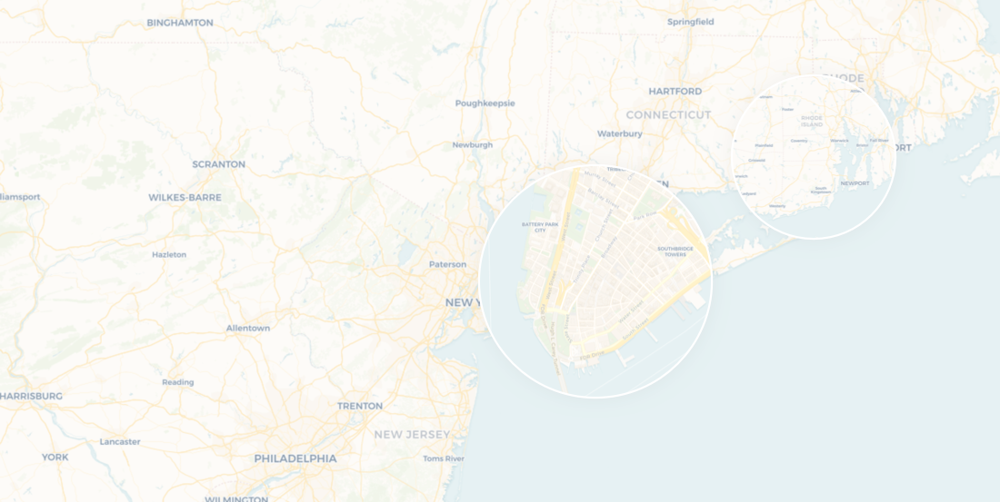
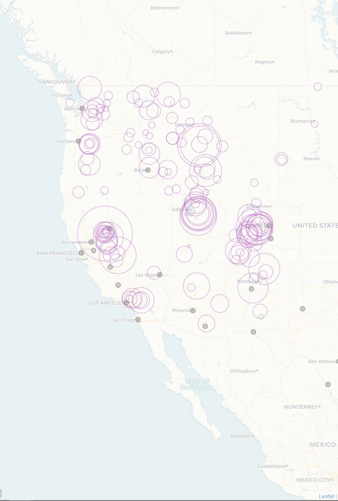
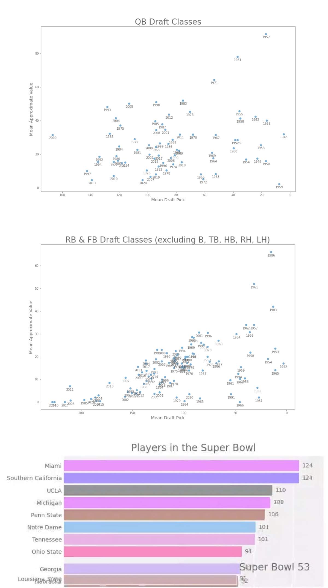

About me
Hi! I am currently a student at the University of Washington-Seattle pursuing a major in GIS: Data Science, and a minor in Informatics. When not working on personal projects in coding and mapping, you can usually find me either skiing or playing videog games--two of my favorite hobbies. While I consider myself a proficient programmer and would like to pursue that further, my dream career also involves using and collecting data to solve and inquire on geographic issues.
back
Urban Exploration Map

This is a community-driven map of hidden or otherwise overlooked places in the Pacific Northwest. All locations were submitted and added to the map by members of the Urban Exploration community. The map was previously hosted on zeemaps but due to their predatory pricing, we opted to create a new version from the ground up using leaflet, javascript, and azure for data hosting.
Ski Area Map

I created this map with the intent of creating a tool to assist both experienced and novice skiers in familiarizing themselves with United States ski areas and their relative distances to major cities. Tools included in the web map include sliders to adjust what ski areas are visible, based on both popularity (Wikipedia pageviews), and total vertical drop, a menu to select the basis of circle scaling between popularity and vertical, and a filter to only show cities with a given amount of ski areas in a given radius.
NFL Data Analysis

In my free time, I have scraped and put together several analyses and data visualizations regarding NFL players, including college representation of players in the Super Bowl, and plots/regressions of NFL players' draft positions and corresponding career value.
back